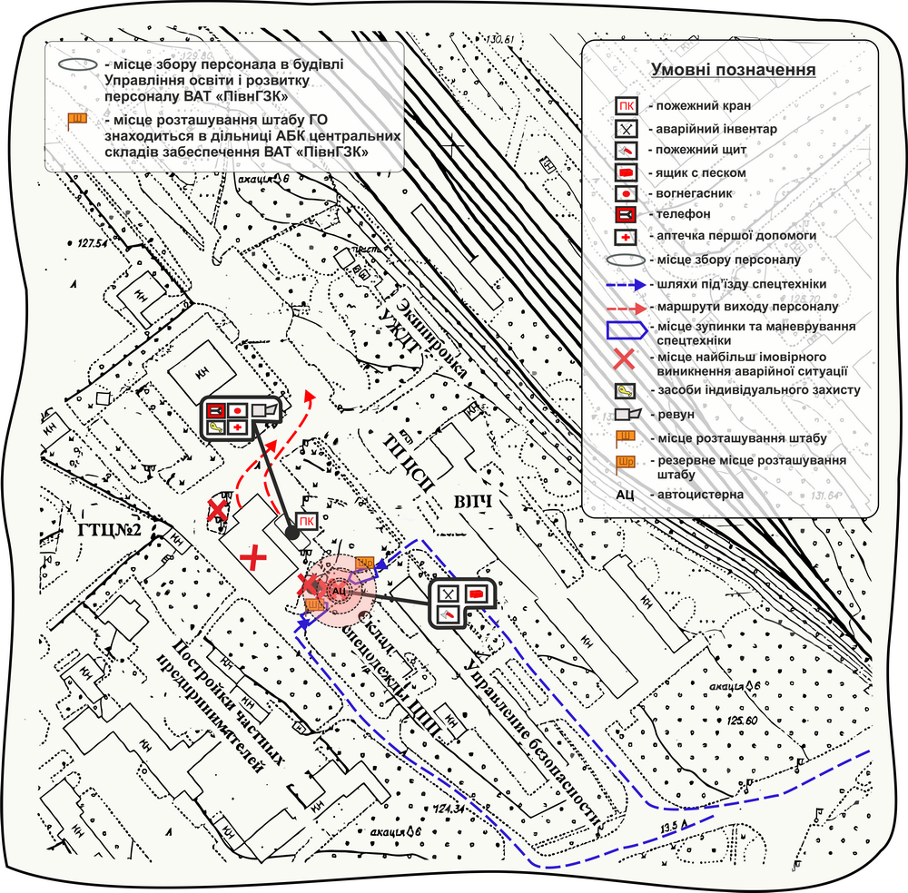
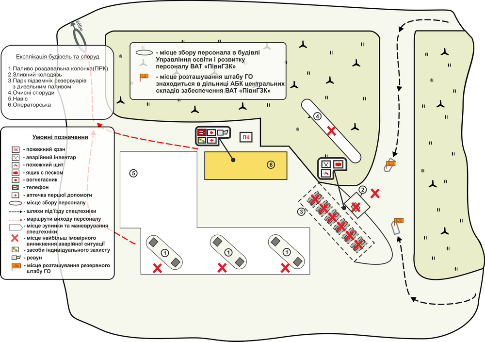
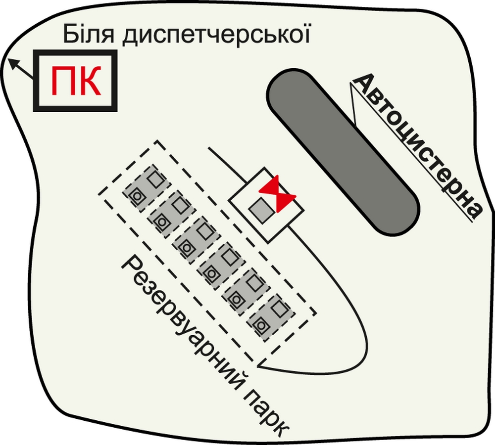

З вибухом автомобільної цистерни з 9,8 т. дизельного палива
на потенційно-небезпечному об’єкті
ВАТ «Північний Гірничо-збагачувальний комбінат» (Склад ПММ ЦПП №151(АЗС))
Картка аварії № ...
| Відомості про аварію, що відбулася | |||
|---|---|---|---|
| Характер аварії | Характер небезпеки | Максимально можливий рівень аварії | Число потерпілих |
| Вибух автомобільної цистерни з 9,8 т. дизельного палива в результаті перегріву пароповітряної суміші в середині цистерни | Вибухопожежна | Місцевий | 45 особи |
План розташування Складу ПММ ЦПП №151(АЗС) з позначенням зон можливого руйнування при вибуху резервуарів з нафтопродуктами, а також з позначенням шляхів евакуації персоналу та маршрутів під'їзду спецтехніки

| ДОВІДКОВІ ВІДОМОСТІ ПРО ПОТЕНЦІЙНО НЕБЕЗПЕЧНИЙ ОБ’ЄКТ (ПНО) | ||||||
|---|---|---|---|---|---|---|
| Повна назва потенційно небезпечного об’єкта (ПНО) | Центральний склад № 151 (автозаправна станція) цеху підготовки виробництва ВАТ «ПівнГЗК» | |||||
| скорочена назва ПНО | Cклад № 151 АЗС | |||||
| Місце знаходження ПНО: | ВАТ «ПівнГЗК» |
|||||
| область, АР Крим | Дніпропетровська | |||||
| район області, район АР Крим | Криворізький | |||||
| місто | Кривий Ріг | |||||
| район міста | Тернівський | |||||
| населений пункт (селище, смт тощо) | - | |||||
| вулиця, № будинку | - | |||||
| поштовий індекс | 50079 |
|||||
| Відповідальна особа ПНО (юридична): | Відкрите акціонерне товариство «ПівнГЗК» | |||||
| Місце знаходження юридичної особи (адреса, поштовий індекс) | 50079, м. Кривий Ріг,площа Комсомола України | |||||
| телефон | код | Електронна адреса | ||||
| Керівник (посада, прізвище, ініціали) | Стафєєва Інна Сергіївна | |||||
| телефон | код | Електронна адреса | ||||
| Місце знаходження відповідальної особи (адреса, поштовий індекс) | 50031, м. Кривий Ріг, вул. Соціалістична, буд. 12 кв. 18 | |||||
| чисельність працівників у найбільшій зміні, осіб | 3 | |||||
| Категорія з цивільної оборони | перша | |||||
| Група небезпечності об’єкта | Не визначена | |||||
| Географічні координати ПНО: | ||||||
| широта: | градусів |
48 | хвилин | 09 | секунд | 43 |
| довгота: | градусів |
33 | хвилин | 32 | секунд | 53 |
План території Склад ПММ ЦПП №151(АЗС) з позначенням шляхів евакуації персоналу та маршрутів під’їзду спецтехніки

| Відомості про наслідки вибуху | |||
|---|---|---|---|
| Назва вибухової речовини (горючого газу, парів ЛЗР), що вибухає | Кількість речовини (парів), що бере участь в утворенні вибуху, т | Характеристика аварійного чинника | Радіус розповсюдження, м |
| Дизельне паливо | 9,8 | R1 – радіус зони повного руйнування будівель і смертельної небезпеки для людей, на межі якої надмірний тиск по фронту ударної хвилі dР>=100 кПа; | 8 |
| Дизельне паливо | 9,8 | R2 – радіус зони сильних руйнувань будівельних конструкцій, обвалення цегляних стін і смертельної небезпеки для людей dР=70 кПа | 10 |
| Дизельне паливо | 9,8 | R3 – радіус зони слабких руйнувань будівельних конструкцій, для відновлення яких потрібне їх часткове розбирання і смертельної небезпеки для людей на відкритій місцевості dР=28 кПа | 18 |
| Дизельне паливо | 9,8 | R4 – радіус зони слабких руйнувань (руйнування віконних отворів тощо) і важкого травмування людей на відкритій місцевості dР=14 кПа | 29 |
| Дизельне паливо | 9,8 | R5 – радіус зони часткового руйнування скління, нижній поріг ураження людей на відкритій місцевості dР<=2 кПа | 146 |
Фрагмент ПНО з позначенням вибухонебезпечних емностей с нафтопродуктами та засобів ліквідації аварії

| Властивості речовини, яка утворює аварію (Речовина - Дизельне паливо) | |
|---|---|
| Найменування показника, одиниця виміру | Значення показника |
Емпірична формула |
С14,511Н29,120 |
Фізико-хімічні властивості: |
|
| молекулярна вага | 172,3- 203,6 а. е. м. |
| температура плавлення, °С | 45-50 |
| температура кипіння, °С | .139 |
| температура фазового переходу, °С | -55 |
| агрегатний стан при н.у. | |
| колір | Безбарвний або жовтуватий |
| запах | неприємний запах сірчистих сполук |
| питома вага газу, кг/см3 | 840 |
| Вибухо та пожежонебезпечні властивості: | |
| температура спалаху, °С | 35-59 |
| температура самозапалювання, °С | 300-310 |
| вибухонебезпечні межі в повітрі, об. % | 15-83 |
| швидкість розповсюдження полум'я, м/с | 10-15 |
| максимальний тиск вибуху, кПа | 9,0 ? 10-7 кПа |
| теплота згоряння, кДж/кг | 42000 |
| мінімальна енергія запалювання, мДж | 0,416 ...0,386 |
| здатність до BLEVE | Присутня |
| Токсичні властивості: | Клас небезпеки (ГОСТ 12.1.007-76) |
| ГДК у повітрі робочої зони, мг/м3 | 300 |
| концентрації відчуття запаху, мг/м3 | 150 |
| інші | |
Реакційна здатність \ Корозійна активність: Хімічна стабільність дизельного палива - це здатність протистояти окислювальним процесам під час зберігання. При тривалому зберіганні паливо окислюється і утворюється осад. Процес окислення прискорюється за наявності деяких металів, що застосовуються для виготовлення паливної апаратури. Корозійна активність дизельних палив помірна, характеризується присутністю в них сполук сірки. |
|
Вплив на людей та довкілля: Небезпека при вдиханні. Пари викликають подразнення слизових оболонок і шкіри. Запаморочення, слабкість, розлад координації руху, зниження температури тіла, сповільнення пульсу, сухість, нудота, дере у горлі, кашель, різання в очах, сухість, сверблячка і почервоніння шкіри |
|
Вплив на людей та довкілля: Паливо дизельне спричиняє подразнення слизової оболонки і шкіри людини, а також виникнення шкіряних захворювань. При тривалому контакті викликає зміни функцій центральної нервової системи, підвищену захворюваність органів дихання людини. При попаданні в маленькі ранки та тріщинки викликає в них біль. Паливо дизельне не утворює токсичні сполуки в повітряному середовищі і стічних водах в присутності інших речовин або факторів при температурі навколишнього середовища. Пари палива дизельного негативно впливають на стан навколишнього середовища. При виливі у водойми на їх поверхні утворюється плівка, яка перешкоджає надходженню кисню, що може призвести до масової загибелі представників флори та фауни водойм. |
|
Запобіжні засоби та засоби захисту: Вентиляція. При очищенні і ремонті цистерн - попередня продувка інертним газом (гострим паром), потім - чистим повітрям. В атмосфері з високим вмістом дизельного палива забороняється працювати наодинці. Застосування засобів індивідуального захисту згідно ГОСТ 12.4.011 і ГОСТ 12.4.103. В місцях з концентрацією парів палива, яка перевищує ГДК, застосовують протигази марок А, БКФ і шлангові протигази ПШ-1 або аналогічні згідно ГОСТ 12.4.034. Для захисту шкіри рук застосовують рукавиці, креми і пасти згідно ГОСТ 12.4.068 |
|
| Методи переведення речовини в нешкідливий стан : При загоранні палива дизельного застосовують такі засоби пожежогасіння: вуглекислий газ, хімічна піна, перегрітий пар, розпилена вода, порошок ПСБ-3; в приміщеннях - об'ємне гасіння. При розливі дизпалива необхідно зібрати його в окрему тару, місце розливу промити мильним розчином, гарячою водою, протерти сухою тканиною. При розливі на відкритому майданчику місце розливу засипати піском з наступним його видаленням і знешкодженням згідно СанПіН № 3183-84. Для запобігання розтіканню при значному виливі утворюють штучне обвалування навколо місця проливання. | |
| Перша допомога потерпілим: При попаданні дизельного палива на шкіру - змити його струменем води; при роздратуванні дихальних шляхів - прополоскати горло дво - трьох відсотковим розчином питної соди; при попаданні в шлунок - промити шлунок водою або фізіологічним розчином, випити прохолодний чай, мінеральну воду. | |